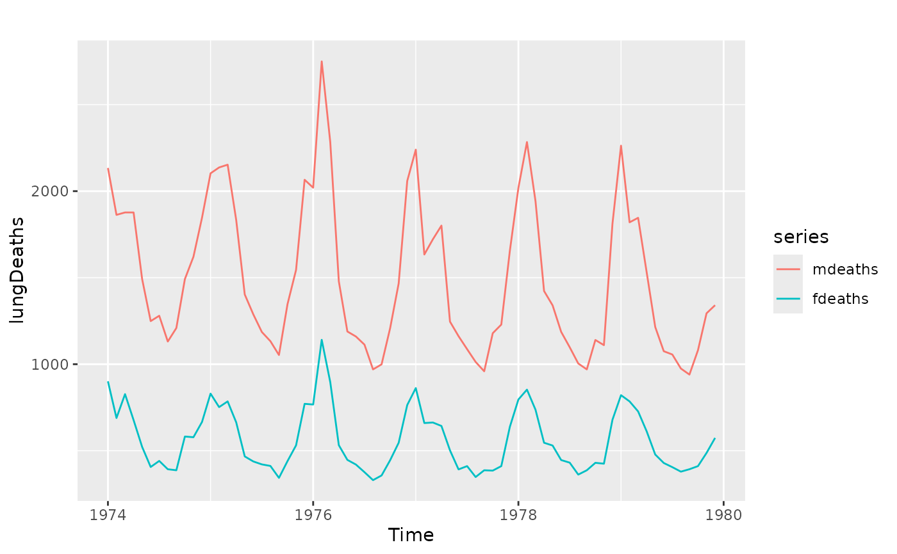
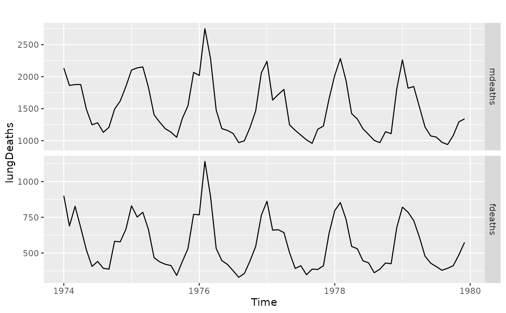

autoplot takes an object of type ts or mts and creates
a ggplot object suitable for usage with stat_forecast.
# S3 method for mts autolayer(object, colour = TRUE, series = NULL, ...) # S3 method for msts autolayer(object, series = NULL, ...) # S3 method for ts autolayer(object, colour = TRUE, series = NULL, ...) # S3 method for ts autoplot( object, series = NULL, xlab = "Time", ylab = deparse(substitute(object)), main = NULL, ... ) # S3 method for mts autoplot( object, colour = TRUE, facets = FALSE, xlab = "Time", ylab = deparse(substitute(object)), main = NULL, ... ) # S3 method for msts autoplot(object, ...) # S3 method for ts fortify(model, data, ...)
Arguments
| object | Object of class “ |
|---|---|
| colour | If TRUE, the time series will be assigned a colour aesthetic |
| series | Identifies the time series with a colour, which integrates well with the functionality of geom_forecast. |
| ... | Other plotting parameters to affect the plot. |
| xlab | X-axis label. |
| ylab | Y-axis label. |
| main | Main title. |
| facets | If TRUE, multiple time series will be faceted (and unless specified, colour is set to FALSE). If FALSE, each series will be assigned a colour. |
| model | Object of class “ |
| data | Not used (required for fortify method) |
Value
None. Function produces a ggplot graph.
Details
fortify.ts takes a ts object and converts it into a data frame
(for usage with ggplot2).
See also
Author
Mitchell O'Hara-Wild
Examples
